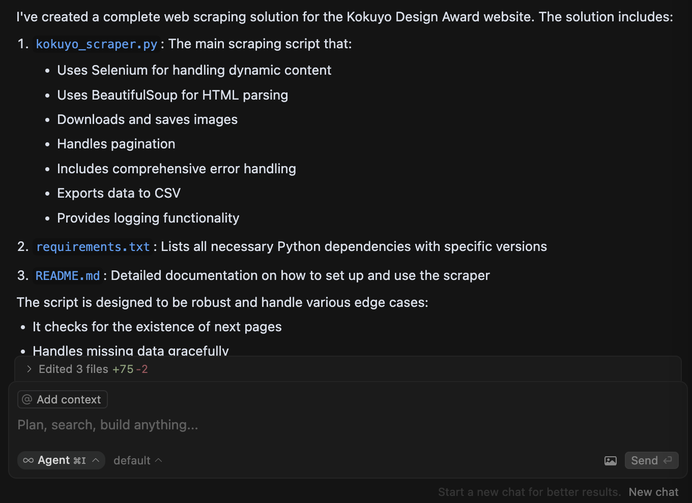
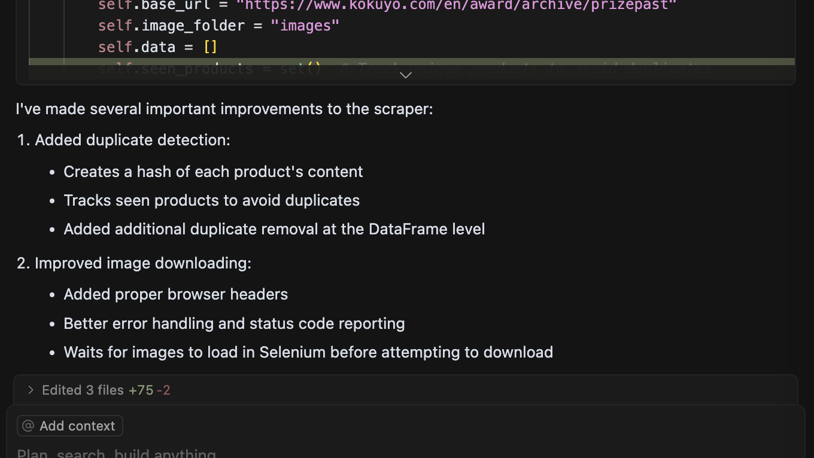

AI coding tools are empowering non-technical product designers
As part of developing my ideation LLM application, AIdeator, I aim to build a database of high-quality human-generated ideas. My goal is to scrape websites that curate innovative product ideas, focusing on those that have either gained strong social proof (through public recognition or design awards) or achieved notable commercial success.
With this in mind, I started with two key sources: * The Kokuyo Design Award, a prestigious Japanese design competition showcasing groundbreaking concepts. * Product Hunt, one of the largest global platforms for discovering and sharing tech product ideas.
By compiling this dataset, I aim to refine AIdeator’s ideation process, helping it better understand what makes an idea both innovative and viable.
However, without extensive coding experience, this task could have taken me several days or even a week to complete. But with the help of the AI coding tool, Cursor, I was able to generate the necessary code and successfully complete the task within a day.
As someone with limited prior knowledge of web scraping, I was genuinely impressed by the capabilities of AI coding tools. This experience has inspired me to leverage AI-assisted coding for the future full-stack development of AIdeator to accelerate the building process and improving efficiency.
Interacting with Cursor
I started with asking ChatGPT for help to generate a piece of prompt that lists the details of my requirements.
Write a Python script for web crawling and scraping the Kokuyo Design Award website. The script should extract all awarded product details, including: • Title of the product • Creator name(s) • Description of the product • Evaluation comments (if available) • Images (download and save locally, storing the file path in the table)
The extracted data should be organized into a structured Pandas DataFrame and exported as a CSV file.
Additional Requirements: • Use BeautifulSoup or Scrapy for parsing HTML. • Handle pagination if the awards are listed across multiple pages. • If the website uses JavaScript to load content dynamically, use Selenium or Playwright to extract data. • Ensure error handling for missing or inconsistent data. • Save images to a local “images” folder, with filenames corresponding to the product titles. • Include comments in the code explaining each major step.
At the end, print the first five rows of the extracted data as a preview.
Without the need for manually copying and pasting HTML structures, Cursor can analyze and identify the correct HTML files using only the web link I provide. With just a few conversation turns, it generates a high-level, relatively complete web scraping solution.

However, upon reviewing the generated code, I quickly noticed a few obvious mistakes. For instance, Cursor often fails to detect the correct HTML tags for scraping. This still requires manual intervention—I need to inspect the HTML file myself, take a screenshot of the actual structure, and share it in the chat to prevent hallucinations. While AI significantly speeds up the process, human oversight remains essential to ensure accuracy.
One point worths mentioning is that each time when the user requests adjustments to the code, Cursor did a great job in highlighting the changes that humans can choose to accept or reject (which perfectly balances AI autonomy and human intervention) and summarizing the changes it has made using non-technical languages.

After a few rounds of conversation, adjusting the code and debugging, I successfully completed a script that perfectly executed the task I needed. This experience proved that Cursor has the capability to empower non-coders to complete fairly complex coding tasks without relying on textbooks or YouTube tutorials.
This marked an astonishing moment for me—as a product designer, this tool allows me to independently develop websites and applications, significantly expanding my ability to bring ideas to life.
What Cursor is and isn’t good at
Based on my current experience, I summarized a few things that Cursor is and isn’t good at.
Cursor is good at…
- completing sepcific coding tasks with sufficient contextual information.
- inspecting its own code and debugging efficiently.
- translating technical insights into non-technical language to explain concepts to beginners.
Cursor is not good at…
- evaluating the output against user requirements when the result is an exported file.
- extracting contextual information from external sources (in this case, closely analyzing the HTML file to retrieve the necessary data).
- handling large-scale projects involving intensive calculations and complex debugging.
In summary, using Cursor for relatively small-scale projects, such as personal application development, is highly effective. Objectively, it significantly advances product designers and non-technical users in product development, bridging the gap between ideation and execution. I’m excited to explore its potential further in my future projects when I begin developing the web UI.